Instrument Cluster
This guide will follow my video and add a few more details here and there. It will describe the bulb replacement procedure and the gauges removal.
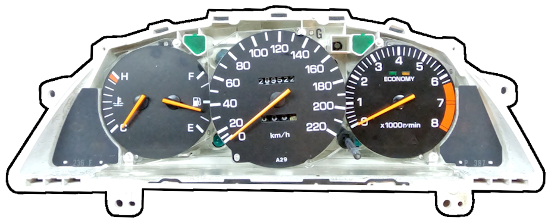
Bulb Replacement
This section covers replacement of the illumination bulbs. All other bulbs in the cluster are replaced in a similar way.
Parts
Here are the parts you will need to replace the bulbs.
| Quantity | Part | Link |
|---|---|---|
| 5 | T10 bulb | AliExpress |
| 1 | T5 bulb | AliExpress |
| Optional socket replacements | ||
| 5 | T10 socket | AliExpress |
| 1 | T5 socket | AliExpress |
Procedure
-
If you have not removed the cluster yet, follow
this removal video.
Instrument cluster removal procedure. - Place the cluster with the gauges facing down so you can access the bulbs on the back. Be careful not to damage the odometer reset rod.
-
Remove the bulb sockets by twisting them counterclockwise, then pull them out.
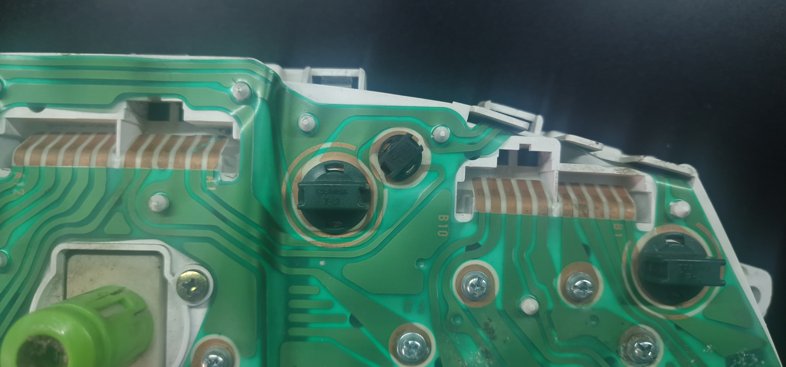
1. Socket locked. 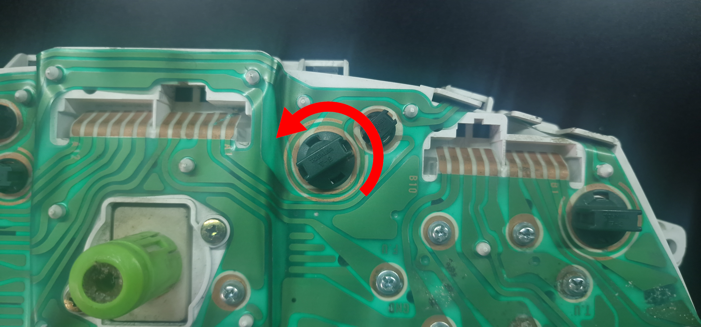
2. Twist counterclockwise to unlock. 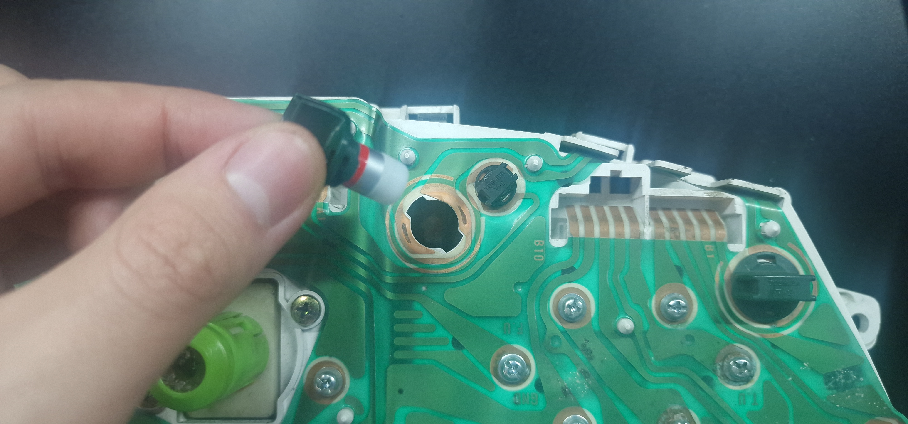
3. Pull out the socket. - Pull each bulb out of its socket and install a new bulb. If you also bought new sockets, you can use those instead.
- Return the sockets to their positions and twist them clockwise to lock them in place.
Info
If a socket is loose, or if the copper on the PCB is damaged, the bulb may not work or may flicker. See Copper Contact for possible fixes.
Copper Contact
Damaged or corroded copper can prevent bulbs from working properly—or at all. Both LED and conventional bulbs become hot during use. Heat can affect contact quality, causing a bulb to work while cold and stop when hot, or vice versa.
A loose socket can cause the same symptoms. Try replacing the socket first. If that does not help, add a small amount of conductive material, such as copper tape, between the socket and the PCB. Copper tape may also restore contact where the PCB copper is damaged. Treat soldering as a last resort.
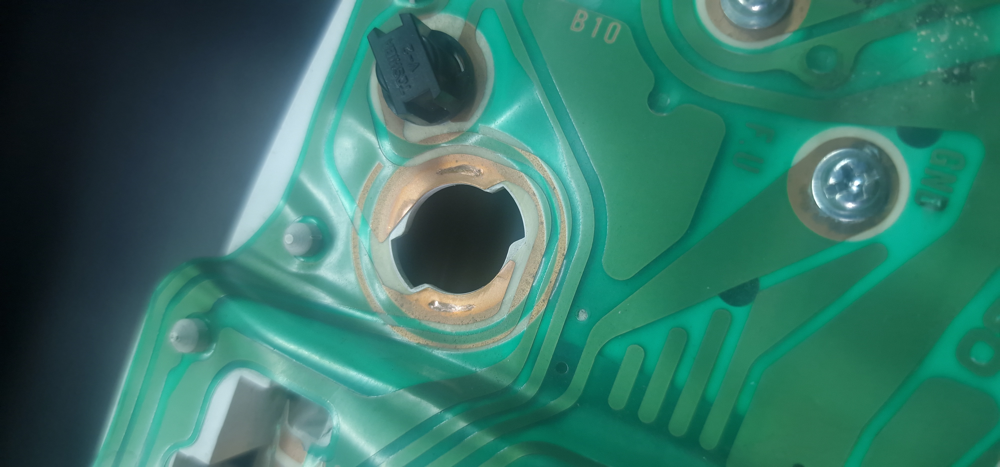
Bulb Orientation
LED bulbs are polarity-sensitive. Installing one in the wrong orientation will not cause damage, but the LED will not illuminate. You can check the orientation in either of these ways:
- Install the LEDs, reconnect the cluster to the car, and turn on the lights. For each LED that does not illuminate, remove its socket and reverse the bulb. Once every LED works, turn off the lights and finish reinstalling the cluster.
- Perform the same test at home using a 12 V power supply.
Testing Illumination at Home
Prepare the following additional equipment before testing the cluster:
Equipment
- 12 V power supply rated for at least 30 W
- 2 A or 5 A fuse
- Wires
Procedure
Warning
Only perform this test if you have experience working with electronics. Incorrect connections can be dangerous and may permanently damage the instrument cluster.
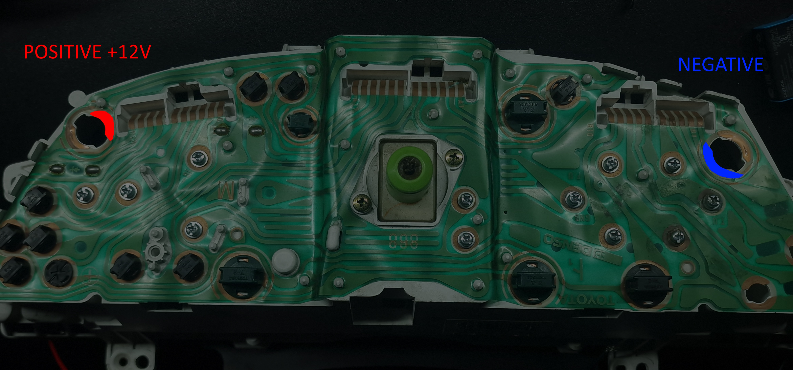
- Connect the positive wire from the power supply to a fuse, then connect the other side of the fuse to the positive point.
- Connect the negative wire from the power supply to the negative point.
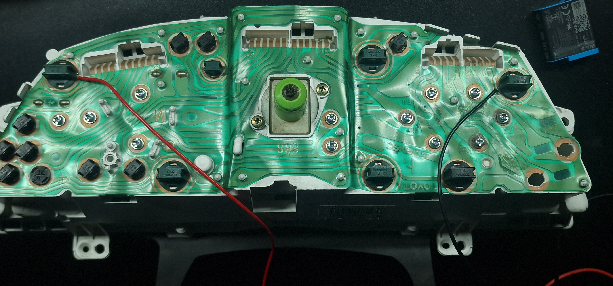
Info
You can use the bulb sockets to hold the wires against the connection points.
- Verify that every connection is secure and that nothing is short-circuiting, then turn on the power supply.
- Check that every bulb illuminates correctly. This is easier in darkness or with the front plastics removed so you can see the bulbs directly.
Gauge Removal
Procedure
-
Remove the relevant screws from the back of the cluster. Remove every marked screw if
you want to take out all gauges, or only the screw group for the individual gauge you
want to remove.
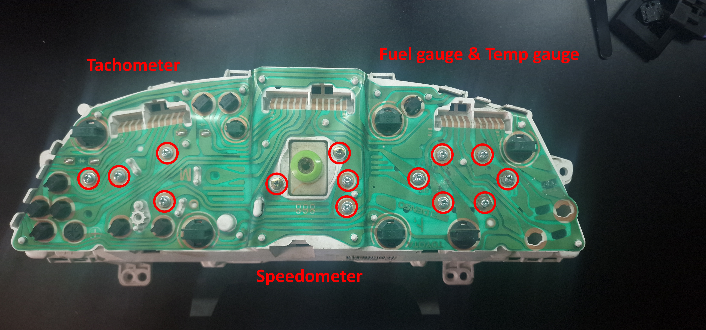
The marked screw groups secure the individual gauges. -
Flip the cluster over and remove the four screws holding down the clear plexiglass
shield.
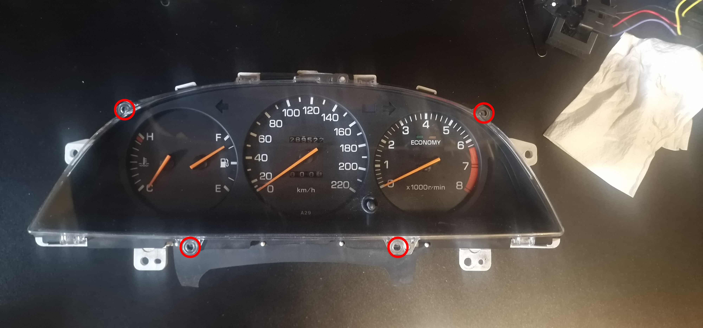
Remove the four marked screws. - Release the plastic clips and remove the clear plexiglass shield.
-
Release the two plastic clips and remove the small lower trim shield.
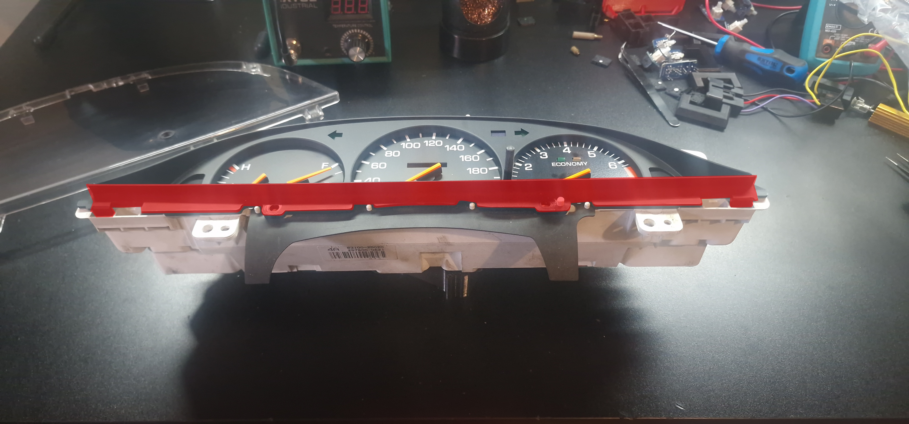
Remove the highlighted lower trim shield. -
Release its plastic clips and remove the main plastic gauge cover.
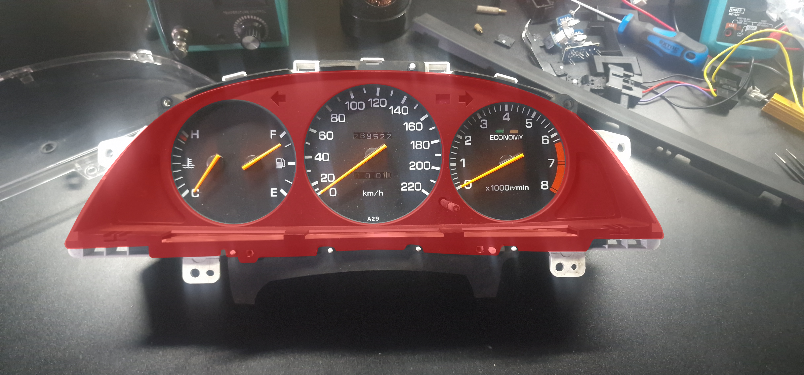
Release the highlighted cover. -
The gauges you have unscrewed initially should now be loose and removable by hand
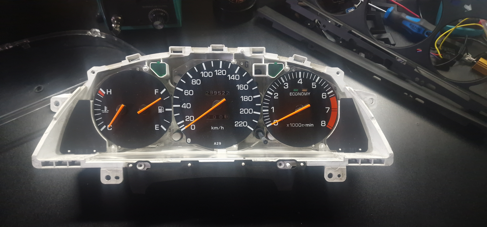
The gauges are exposed and ready for removal. -
Remove gauges as needed to replace or repair.
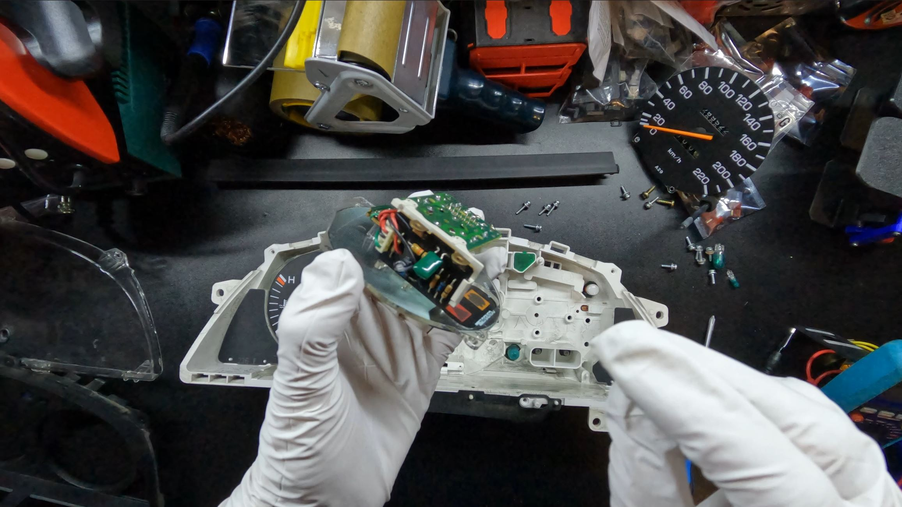
Remove each loosened gauge as needed.